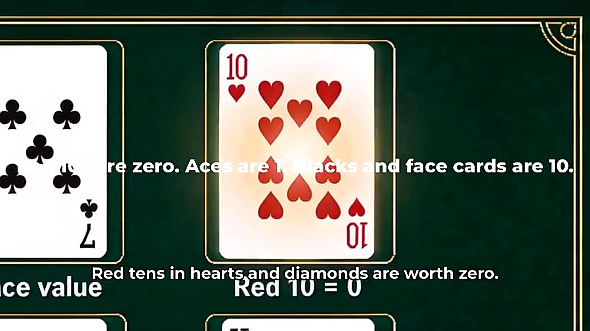
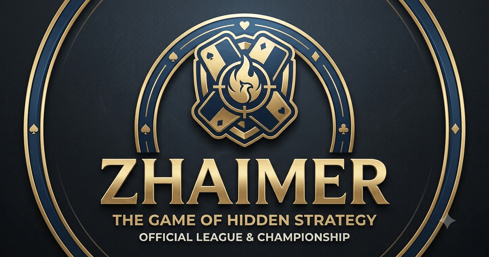
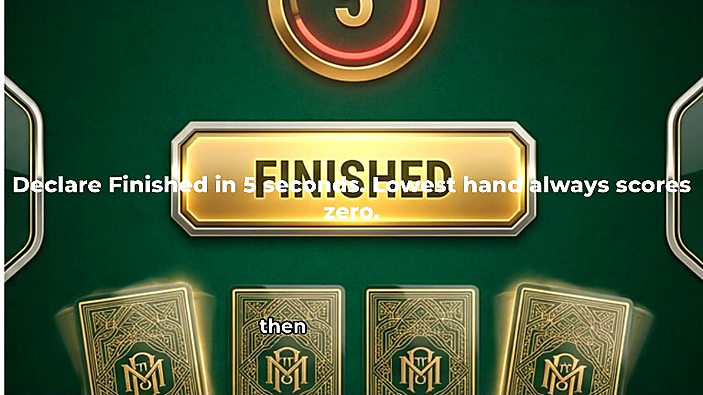
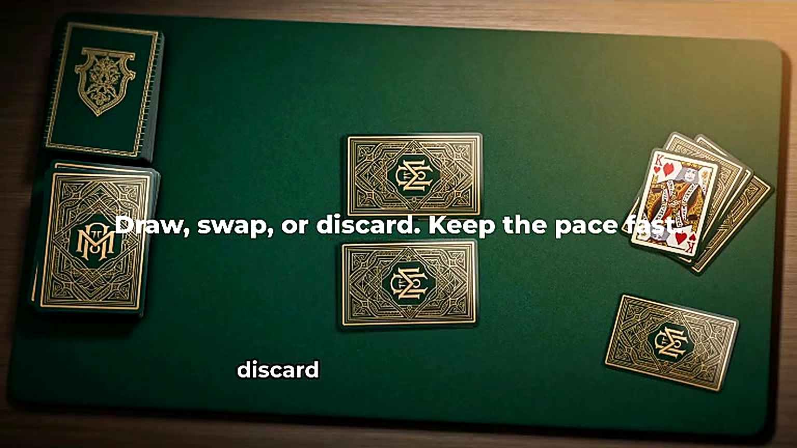

OFFICIAL GAME GUIDE
How to Play Zhaimer
Zhaimer is a strategic memory card game where the best hand is the one with the lowest score. Remember your hidden cards, use special abilities carefully, and decide when to end the round.
See It In Action
Click through the steps below, or scroll down for the full picture-guided walkthrough.
Prefer to scroll? Here's the same walkthrough laid out with full screenshots.

1Peek at your cards
Every player starts with four face-down cards. Click two of them to peek for four seconds — then they flip back over. This is your only free look, so remember both the value and the position.

2Take your turn
On your turn, choose to draw from the deck (unknown card), draw from the discard pile (visible card), or attempt a burn. A countdown timer keeps the game moving.

3Use special powers
Draw a King, Jack or Queen and discard it directly instead of swapping it in to activate its power: King draws two, Jack blind-swaps with an opponent, Queen lets you peek at your own card.

4Reveal and score
Once the round ends, every hand flips face-up. The lowest total scores zero for the round, and everyone else adds their raw total to their running score. Reach 100 and you're eliminated.
1. Game Setup
- Each player receives four cards placed face down.
- At the start of the round, each player may view two of their own cards for four seconds.
- The viewed cards are placed face down again. Players must remember their values and positions.
- The remaining deck becomes the draw pile, and one card starts the discard pile.
- Players take turns drawing, replacing, discarding or using special abilities.
2. Objective
Finish each round with the lowest total card value. Across a complete match, round scores are added together. A player who reaches 100 points is eliminated, so consistent low scoring matters more than winning only one round.
3. Card Values
| Card | Value or Effect |
|---|---|
| Ace | 1 point |
| 2–9 | Face value |
| 10♥ and 10♦ | 0 points |
| 10♠ and 10♣ | 10 points |
| Jack | 10 points; activates a swap ability when used |
| Queen | 10 points; activates one reveal ability when used |
| King | 10 points; activates a draw-two ability when used |
4. Special Cards
King — Draw Two
Draw two cards and use the extra choice to improve your hidden hand.
Queen — Reveal
Look at one hidden card once. Use the information before replacing or declaring.
Jack — Swap
Swap cards strategically to remove a suspected high card or disrupt an opponent.
5. Matching and Burning
Two identical numbers may be discarded when a matching attempt is allowed. A successful match reduces the number of cards in play.
If the attempted cards do not match, they are returned and the player draws two penalty cards. Avoid guessing unless you have a strong memory of both positions.
6. Ending the Round
When a player believes they have the lowest total, they may declare that they are finished. The round does not end immediately. Every other player receives one final turn until play returns to the declarer. Then all cards are revealed and scored.
7. Scoring Examples
Example A
10♥ + 10♦ + 3 + 7
Total: 10 points
The two red tens are worth zero.Example B
K + 9 + 10♥ + 5
Total: 24 points
King counts as 10 when it remains in the final hand.Example C
A + 2 + 4
Total: 7 points
A burned card can leave fewer cards to score.8. Beginner Strategy
- Replace known high cards before gambling on forgotten positions.
- Use the Queen when the information will affect your next move.
- Attempt matching only when you reasonably remember both cards.
- Watch opponents’ swaps and reactions for clues.
- Estimate your total before declaring the end of the round.
9. Frequently Asked Questions
Is Zhaimer free to play?
Yes. The current browser version is free. Support through PayPal is optional.
Can I play on a phone?
Yes. Use a modern version of Chrome, Edge, Safari or Firefox for the best experience.
Do I need an account?
No account is required for the current browser experience.
Is online multiplayer available?
The project is being developed gradually. Features may change as new versions are released.
What happens at 100 points?
A player who reaches 100 accumulated points is eliminated from the match.